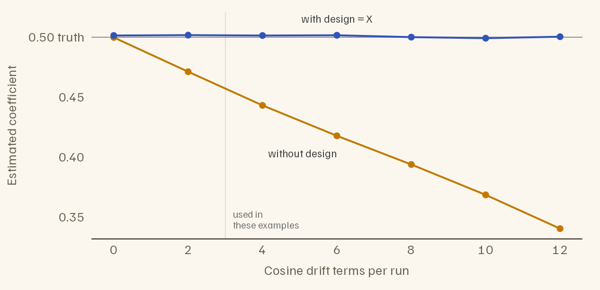
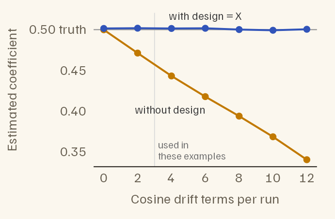
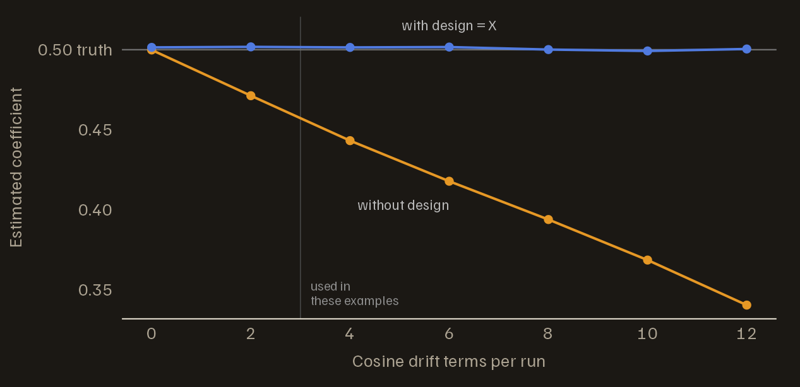
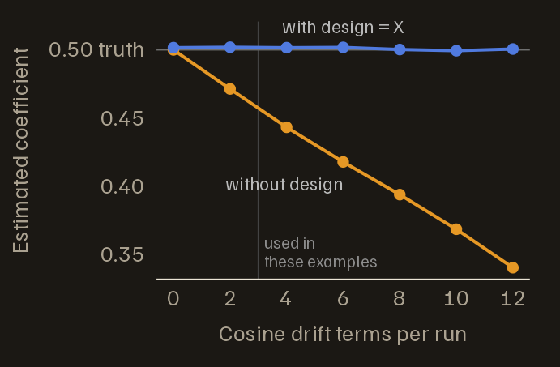
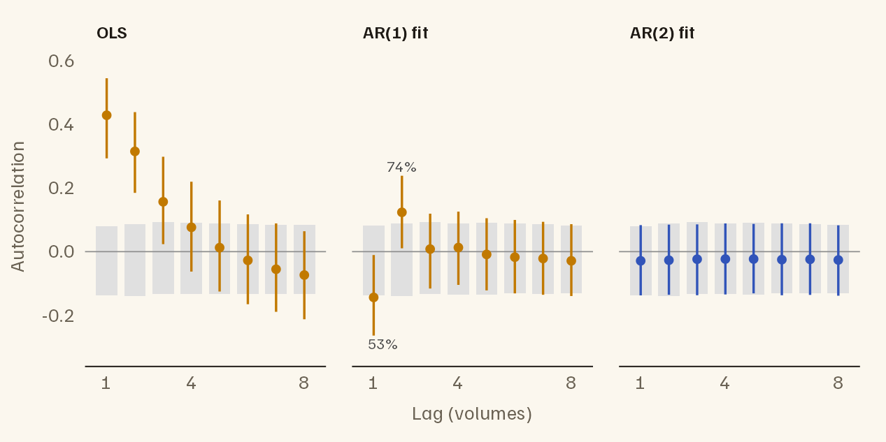
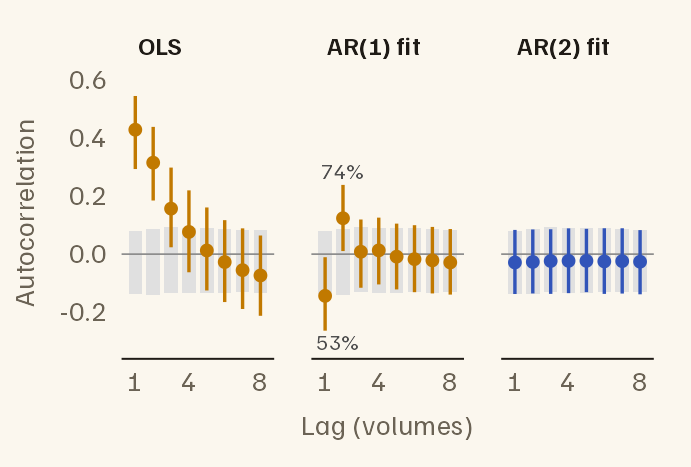
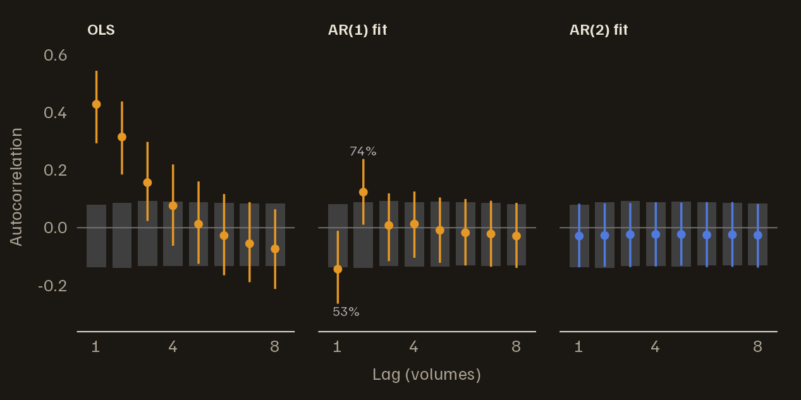
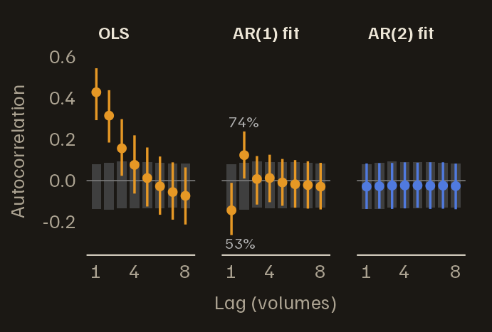

Getting started
(vignette("fmriAR-introduction")) ran the default workflow
on noise that matched its assumptions. This vignette covers the choices
behind that workflow: why to pass the design to
fit_noise(), how the AR order is chosen and how to tell
when it is too low, standard errors that tolerate leftover
autocorrelation, when an ARMA model fits better, and how to use filters
specified in AFNI’s restricted form.
The examples use the same kind of simulated study as Getting started: two runs of 150 volumes at a TR of 2 seconds, an event-related task, and an intercept and a set of cosine drift terms for each run. Each section changes the noise; the first also varies the number of drift terms.
library(fmriAR)
set.seed(7)
TR <- 2
n_per_run <- 150
runs <- rep(1:2, each = n_per_run)
n_time <- length(runs)
hrf <- function(t) dgamma(t, 6) - dgamma(t, 16) / 6
h <- hrf(seq(0, 30, by = TR))
event_regressor <- function(n) {
onsets <- cumsum(sample(6:10, n, replace = TRUE))
stim <- tabulate(onsets[onsets <= n], nbins = n)
x <- stats::filter(stim, h / max(h), sides = 1)
as.numeric(replace(x, is.na(x), 0))
}
cosines <- function(n, k) {
sapply(seq_len(k), function(j) cos(pi * j * (seq_len(n) - 0.5) / n))
}
# Task, one intercept per run, and k cosine drift terms per run
make_design <- function(k = 3) {
X <- cbind(task = c(event_regressor(n_per_run), event_regressor(n_per_run)),
run1 = runs == 1, run2 = runs == 2)
if (k > 0) {
none <- matrix(0, n_per_run, k)
X <- cbind(X, rbind(cosines(n_per_run, k), none),
rbind(none, cosines(n_per_run, k)))
}
X
}
# Noise for n_vox voxels, each run simulated separately: an AR process with
# coefficients `ar`, plus optional white noise with standard deviation white_sd
simulate_noise <- function(n_vox, ar, white_sd = 0) {
one_run <- function() {
as.numeric(arima.sim(list(ar = ar), n = n_per_run)) +
rnorm(n_per_run, sd = white_sd)
}
replicate(n_vox, c(one_run(), one_run()))
}Why design = X matters
The noise model is estimated from residuals, and residuals are not the noise. Fitting a model removes from the data whatever the regressors can reproduce, and that includes some of the noise. In matrix terms the residuals are , where is the projection that removes the design, so their covariance is rather than the noise covariance .
The result is a downward bias in the estimated autocorrelation, and
drift terms cause most of it: slow cosines soak up slow fluctuations,
which is where autocorrelated noise keeps its power. Below, the same
AR(1) noise, with coefficient 0.5, is fitted under designs with more and
more drift terms, once without the design (plain) and once
with it (corrected).
noise <- simulate_noise(2000, ar = 0.5)
n_drift <- c(0, 2, 4, 6, 8, 10, 12)
bias <- t(sapply(n_drift, function(k) {
X_k <- make_design(k)
r <- lm.fit(X_k, noise)$residuals
c(drift_terms = k,
plain = fit_noise(r, runs = runs, p = 1)$phi[[1]],
corrected = fit_noise(r, runs = runs, p = 1, design = X_k)$phi[[1]])
}))
round(bias, 3)
#> drift_terms plain corrected
#> [1,] 0 0.500 0.501
#> [2,] 2 0.471 0.502
#> [3,] 4 0.443 0.501
#> [4,] 6 0.418 0.502
#> [5,] 8 0.394 0.500
#> [6,] 10 0.369 0.499
#> [7,] 12 0.341 0.500

Estimated AR(1) coefficient as drift terms are added to the design. The noise is the same throughout, and its true coefficient is 0.5. Without the design, the estimate falls steadily; with design = X, it stays at the truth. The examples in these vignettes use 3 drift terms per run.


design = X corrects for the projection:
fit_noise() works out the bias that
puts into each lag of the autocovariance and inverts it. The correction
works with every pooling mode, for AR and ARMA models, and with
censoring. It needs residuals that really are OLS residuals from
X; a numerical check rejects obvious mismatches.
whiten() and fit_noise(Y = , X = ) form the
residuals themselves and pass the design on their own. Without a design,
fit_noise() still corrects the smaller bias its own per-run
centring introduces.
The correction is computed up to a lag budget and assumes the noise
autocovariance has died out by then. The default,
correction_max_lag = "auto", starts at 25 lags and shortens
the budget when the design makes a long one unstable, as many drift
terms do. With 12 cosines per run, a 50-second high-pass filter far
stricter than the usual 128 seconds, it still recovers the truth:
X_12 <- make_design(12)
r_12 <- lm.fit(X_12, noise)$residuals
fit_noise(r_12, runs = runs, p = 1, design = X_12)$phi[[1]]
#> [1] 0.5005905A budget you set yourself is shortened the same way, with a warning.
If the fitted noise is still clearly autocorrelated at the end of the
budget, where the correction becomes partial, fit_noise()
warns about that too.
Two helpers expose the same correction.
noise_acvf(resid, design = X) returns the corrected
autocovariance itself. acvf_bias_matrix() builds the
correction once, so that it can be passed to
fit_noise(acvf_correction = ) for many datasets that share
the same design, run structure and censored volumes.
Choosing the AR order
With p = "auto" (the default), fit_noise()
tries every order from 0 to p_max (default 6) and keeps the
one with the lowest Bayesian information criterion (BIC). Pooling many
voxels gives BIC more evidence than one series would. But neighbouring
voxels share fluctuations, so fit_noise() counts them as an
effective number of independent voxels,
for
voxels with mean inter-voxel correlation
.
That count is deliberately conservative.
The design correction matters here too. Projection bias distorts every lag a little, and with thousands of voxels BIC treats those small, systematic distortions as structure worth extra coefficients. Here the noise is AR(2):
X <- make_design(3)
noise_ar2 <- simulate_noise(2000, ar = c(0.4, 0.2))
r_ar2 <- lm.fit(X, noise_ar2)$residuals
plan_nodesign <- fit_noise(r_ar2, runs = runs)
#> Warning: fit_noise(): BIC chose the largest AR order allowed (p_max = 6).
#> Residuals from a fitted model carry a small autocorrelation from the fit
#> itself, and with many voxels pooled BIC can mistake it for real structure. If
#> 'resid' came from a regression, pass that design matrix as 'design'; otherwise
#> consider a larger 'p_max'.
plan_design <- fit_noise(r_ar2, runs = runs, design = X)
c(without_design = plan_nodesign$order[["p"]],
with_design = plan_design$order[["p"]])
#> without_design with_design
#> 6 2With the design, the search finds AR(2). Without it, the search
chooses AR(6), adding 4 coefficients that describe the projection, not
the noise, and fit_noise() warns that the search reached
its ceiling.
Spotting an order that is too low
The whiteness check from Getting started shows when an order
is too low. Here it is as two functions: whitened() refits
a noise model’s whitened data and returns the residuals with the
whitened design, and whiteness() compares each voxel’s
autocorrelations with the white-noise band for that design, built by
passing pure white noise through the same fit.
white <- matrix(rnorm(n_time * 2000), n_time)
whitened <- function(plan, Y) {
w <- whiten_apply(plan, X, Y, runs = runs)
list(resid = w$Y - w$X %*% qr.coef(qr(w$X), w$Y), design = w$X)
}
whiteness <- function(resid, design, max_lag = 8) {
ac <- acorr_diagnostics(resid, runs = runs, max_lag = max_lag,
aggregate = "none")$acf
ref <- acorr_diagnostics(qr.resid(qr(design), white), runs = runs,
max_lag = max_lag, aggregate = "none")$acf
band <- apply(ref, 1, quantile, probs = c(0.025, 0.975))
list(ac = ac, band = band,
outside = rowMeans(ac < band[1, ] | ac > band[2, ])) # share per lag
}Below, the same AR(2) noise is whitened twice: with an AR(1) model, and with the AR(2) model the search chose.
plan_ar1 <- fit_noise(r_ar2, runs = runs, p = 1, design = X)
plan_ar2 <- fit_noise(r_ar2, runs = runs, design = X)
w_ar1 <- whitened(plan_ar1, noise_ar2)
w_ar2 <- whitened(plan_ar2, noise_ar2)
# The order chosen without the design correction, for comparison
w_nod <- whitened(plan_nodesign, noise_ar2)
# Share of voxels outside the band at lags 1 to 3
round(rbind(
`AR(1) fit` = whiteness(w_ar1$resid, w_ar1$design)$outside[1:3],
`AR(2) fit` = whiteness(w_ar2$resid, w_ar2$design)$outside[1:3],
`AR(6), no design` = whiteness(w_nod$resid, w_nod$design)$outside[1:3]
), 3)
#> [,1] [,2] [,3]
#> AR(1) fit 0.534 0.740 0.084
#> AR(2) fit 0.054 0.043 0.046
#> AR(6), no design 0.103 0.071 0.068White noise leaves 5% outside; with 2,000 voxels, chance moves that share by about 1.5 points either way. The AR(1) filter fails at lags 1 and 2: it overshoots at lag 1, turning a strong positive autocorrelation negative, and leaves a positive one at lag 2. The AR(2) filter passes. The AR(6) filter chosen without the design correction fails too, more mildly: its extra coefficients fit the projection’s distortion, and whitening with them leaves autocorrelation behind.


The whiteness check for AR(2) noise: residual autocorrelation after OLS, after an AR(1) filter and after an AR(2) filter. Lines span the middle 95% of voxels; dots mark the median; grey boxes are the white-noise band for each fit. The AR(1) filter fails at lags 1 and 2, where the percentages give the share of voxels outside the band; the AR(2) filter passes.


Robust standard errors
By default (type = "iid"),
sandwich_from_whitened_resid() returns the ordinary
standard error, which assumes the whitened noise is white. When some
autocorrelation survives whitening, that standard error is off again, in
a direction that depends on what was missed. type = "hac"
gives a heteroskedasticity- and autocorrelation-consistent (HAC)
Newey–West estimator, computed within runs, which allows for leftover
autocorrelation at short lags. type = "hc0" allows for
unequal variances only.
The AR(2) noise above has no task effect, so every voxel is null and 5% of them should pass :
false_positive_rate <- function(plan, type) {
w <- whiten_apply(plan, X, noise_ar2, runs = runs)
fit <- lm.fit(w$X, w$Y)
se <- sandwich_from_whitened_resid(w$X, w$Y, beta = fit$coefficients,
type = type, runs = runs)$se
mean(abs(fit$coefficients["task", ] / se[1, ]) > 1.96)
}
rates <- sapply(c("iid", "hac"), function(type) {
c(`AR(1), too low` = false_positive_rate(plan_ar1, type),
`AR(2), correct` = false_positive_rate(plan_ar2, type))
})
knitr::kable(rates, digits = 3,
caption = "Share of null voxels with |t| > 1.96, by noise model and standard error.")| iid | hac | |
|---|---|---|
| AR(1), too low | 0.028 | 0.046 |
| AR(2), correct | 0.056 | 0.060 |
With the AR(1) model, the ordinary standard error is wrong. Here it errs on the cautious side; other misfits make it err the other way. HAC brings the rate back toward 5%, and with the correct AR(2) model the two agree. Use HAC as a safety net when a noise model cannot pass the whiteness check, not as a substitute for a good noise model. It has no small-sample correction, so in short runs it is approximate.
ARMA models
Scanner noise adds white noise on top of the autocorrelated physiological noise. An AR(1) process plus white noise is no longer AR(1): it is ARMA(1,1), with one autoregressive and one moving-average coefficient. A pure AR model can mimic it only with extra coefficients. Below, the noise is AR(1) with coefficient 0.8 plus white noise.
noise_mix <- simulate_noise(2000, ar = 0.8, white_sd = 1)
r_mix <- lm.fit(X, noise_mix)$residuals
plan_ar_auto <- fit_noise(r_mix, runs = runs, design = X)
plan_arma <- fit_noise(r_mix, runs = runs, method = "arma", p = 1, q = 1,
design = X)
plan_ar_auto$order
#> p q
#> 5 0
plan_arma
#> fmriAR whitening plan
#> Method: ARMA
#> Orders: p = 1, q = 1
#> Pooling: global
#> Runs: 2 (1, 2)
#> Segment start: exact stationary
#> Coefficients:
#> global: phi = 0.801; theta = -0.342ARMA models are first estimated by the Hannan–Rissanen procedure,
pooled over voxels: each voxel is a replicate series sharing the
coefficients, and no lag crosses a run boundary or a censored volume
(hr_iter adds refinement iterations). That procedure works
on the residual series, so it inherits the projection bias; with
design, the coefficients are then refitted to the
design-corrected autocovariance. Here they come out at 0.80 and -0.34;
the truth is 0.8 and about -0.34.
The BIC search picked AR(5); ARMA(1,1) describes the same noise with two coefficients. The table scores each model by the share of voxels outside the white-noise band at lags 1 to 3 (white noise leaves 5%) and by the false-positive rate, along with a plain AR(1) and an ARMA(1,1) fitted without the design, for comparison.
score <- function(plan) {
wh <- whitened(plan, noise_mix)
w <- whiten_apply(plan, X, noise_mix, runs = runs)
fit <- lm.fit(w$X, w$Y)
se <- sandwich_from_whitened_resid(w$X, w$Y, beta = fit$coefficients)$se
c(whiteness(wh$resid, wh$design, max_lag = 3)$outside,
mean(abs(fit$coefficients["task", ] / se[1, ]) > 1.96))
}
plan_ar1_mix <- fit_noise(r_mix, runs = runs, p = 1, design = X)
plan_arma_nod <- fit_noise(r_mix, runs = runs, method = "arma", p = 1, q = 1)
tab <- rbind(`AR(1)` = score(plan_ar1_mix),
`AR, order by BIC` = score(plan_ar_auto),
`ARMA(1,1), no design` = score(plan_arma_nod),
`ARMA(1,1)` = score(plan_arma))
colnames(tab) <- c("outside, lag 1", "lag 2", "lag 3", "false positive")
knitr::kable(tab, digits = 3,
caption = "Share of voxels outside the white-noise band, and false-positive rate, for AR(1) noise plus white noise.")| outside, lag 1 | lag 2 | lag 3 | false positive | |
|---|---|---|---|---|
| AR(1) | 0.670 | 0.338 | 0.196 | 0.03 |
| AR, order by BIC | 0.061 | 0.044 | 0.046 | 0.06 |
| ARMA(1,1), no design | 0.173 | 0.089 | 0.055 | 0.06 |
| ARMA(1,1) | 0.060 | 0.046 | 0.046 | 0.06 |
The AR(1) fails clearly, and its tests are conservative. The design-corrected AR and ARMA(1,1) models both pass. Without the design, the ARMA(1,1) coefficients carry the projection bias, and the filter leaves 17% of voxels outside the band at lag 1.
method = "arma" also accepts p = "auto" and
q = "auto", which search 0:p_max and
0:q_max by BIC. Do not rely on that search:
rbind(
residuals = fit_noise(r_mix, runs = runs, method = "arma",
p = "auto", q = "auto")$order,
noise_itself = fit_noise(noise_mix, runs = runs, method = "arma",
p = "auto", q = "auto")$order
)
#> Warning: fit_noise(): the ARMA order search chose the largest order allowed
#> (p_max = 6). Its BIC is computed on a regression with estimated innovations,
#> and with many voxels pooled the approximation error looks like structure. Set
#> 'p' and 'q' explicitly.
#> p q
#> residuals 6 2
#> noise_itself 2 2On the residuals it returns the largest orders it is allowed. On the noise itself, with no fitted model in the way, it still returns more coefficients than the ARMA(1,1) truth. The BIC is computed on a regression that uses estimated innovations, and with hundreds of thousands of observations the error in that approximation looks like structure. Set the orders.
AFNI-style restricted filters
AFNI specifies some noise models by their poles rather than their
coefficients: an AR(3) with one real pole a and one complex
pair (radius r1, angle t1), or an AR(5) with a
second pair (r2, t2), plus an optional share
of white noise. The poles are reciprocal roots of the AR polynomial, so
values below 1 mean a stationary process. AFNI’s
1dgenARMA11 uses this form to simulate noise.
afni_restricted_plan() turns such a specification into an
ordinary plan that whiten_apply() can use. It does not
estimate the poles; you supply them. The residuals passed to it set the
run structure and, with estimate_ma1 = TRUE, the MA term;
with estimate_ma1 = FALSE their values are not used.
roots <- list(a = 0.5, r1 = 0.4, t1 = pi / 3)
plan_afni <- afni_restricted_plan(r_ar2, runs = runs, p = 3L, roots = roots,
estimate_ma1 = FALSE)
round(plan_afni$phi[[1]], 3)
#> [1] 0.90 -0.36 0.08a, r1 and r2 must be
non-negative; values above 0.95 are clamped to 0.95, and angles are
clamped to
.
The white noise is set by vrt, the share of variance
carried by the AR part. With vrt below 1 and
estimate_ma1 = FALSE, the plan is the exact ARMA(p, p)
equivalent of AR(p) plus white noise: its autocorrelation is
vrt times the AR autocorrelation at every nonzero lag.
plan_afni_vrt <- afni_restricted_plan(r_ar2, runs = runs, p = 3L,
roots = c(roots, vrt = 0.8),
estimate_ma1 = FALSE)
plan_afni_vrt$order
#> p q
#> 3 3With estimate_ma1 = TRUE (the default), the poles fix
the AR part, an MA(1) term is estimated from the AR-filtered residuals,
and vrt is ignored. To give each parcel its own filter,
pass parcels and a list of pole specifications keyed by
parcel ID.